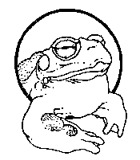

The Sonoran Desert Toad
Bufo alvarius
The excellent article (found here or here) on the California Department of Fish and Game - Habitat Conservation Planning Branch Web site comes from the following report:
AMPHIBIAN AND REPTILE SPECIES
OF
SPECIAL CONCERN IN CALIFORNIA
by Mark R. Jennings
and
Marc P. Hayes
1994
The references sited, unfortunately, were not included with the article on that Web page. For your convenience, they are listed below:
Anderson, B. W., and R. D. Ohmart. 1982. Revegetation for wildlife enhancement along the lower Colorado River.
Final report prepared for the United States Department of the Interior, Bureau of Reclamation, Yuma, Arizona,
under Contract (7-09-30-V0009).
Banks, L. W. 1994. A new craze hops into the drug culture. Los Angeles Times 113(137):E1, col. 4; E3, cols. 1-3.
[Tuesday, 19 April 1994].
Blair, W. F., and D. I. Pettus. 1954. The mating call and its significance in the Colorado River toad (Bufo
alvarius Girard). The Texas Journal of Science 6(1):72-77.
Bowler, J. K. 1977. Longevity of reptiles and amphibians in North American collections. Society for the Study of
Amphibians and Reptiles, Miscellaneous Publications, Herpetological Circular (6):1-32.
Cole, C. J. 1962. Notes on the distribution and food habits of Bufo alvarius at the eastern edge of its range.
Herpetologica 18(3):172-175.
Cooper, J. G. 1869. The naturalist in California., No. II. The American Naturalist 3(9):470-481.
Erspamer, V., T. Vitali, M. Roseghini, and J. M. Cei. 1967. Five-methoxy- and 5-hydroxy-indolealkylamines in the
skin of Bufo alvarius. Biochemical Pharmacology 16:1149-1164.
Fouquette, M. J., Jr. 1970. Bufo alvarius. Catalogue of American Amphibians and Reptiles:93.1-93.4.
Fouquette, M. J., Jr. 1968. Remarks on the type specimen of Bufo alvarius Girard. The Great Basin Naturalist
28(2):70-72.
Gallagher, L. 1994. Smoking toad. New York Times Magazine [Sunday, 5 June 1994]:48-49.
[misspelled Goagher on Web page]
Gates, G. O. 1957. A study of the herpetofauna in the vicinity of Wickenburg, Maricopa County, Arizona.
Transactions of the Kansas Academy of Sciences 60(4):403-418.
Hanson, J. A., and J. L. Vial. 1956. Defensive behavior and effect of skin toxins in Bufo alvarius.
Herpetologica 12(2):141-149.
Jennings, M. R. 1987a. Annotated check list of the amphibians and reptiles of California, second revised
edition. Southwestern Herpetologists Society, Special Publication (3):1-
48.
Landsberg, M. 1990. Legislators toady to chickens, marmots. Los Angeles Times 109(98): A25, cols. 1-3. [Sunday,
11 March 1990].
Leavitt, P. 1989. Nationline: Toad lickers beware. USA Today (Final Edition):3A. [Thursday, 10 August 1989].
Meams, E. A. 1907. Mammals of the Mexican boundary of the United States. A descriptive catalogue of the species
of mammals occurring in that region; with a general summary of the natural history, and a list of trees. Part I.
Families Didelphiidae to Muridae. United States National Museum Bulletin (56):1-530.
Ohmart, R. D., B. W. Anderson, and W. C. Hunter. 1988. The ecology of the lower Colorado River from Davis Dam to
the Mexico-United States International Boundary: A community profile. United States Fish and Wildlife Service,
Biological Report 85(7.19):1-296.
Porter, K. R., and W. F. Porter: 1967. Venom comparisons and relationships of twenty species of New World toads
(genus Bufo). Copeia 1967(2):298-307.
Richards, B. 1994. Toad-smoking gains on toad-licking among drug users; toxic, hallucinogenic venom, squeezed,
dried and puffed, has others turned off. The Wall Street Journal 223(45):A1, col. 4; A8, cols. 5-6. [Monday, 7
March 1994].
Ring and Robbins 1991a [missing]
Ruthven, A. G. 1907. A collection of reptiles and amphibians from southern New Mexico and Arizona. Bulletin of
the American Museum of Natural History 23(23):483-604.
Savage, J. M., and F. W. Schuierer. 1961. The eggs of toads of the Bufo boreas group with descriptions of the
eggs of Bufo exsul and Bufo nelsoni. Bulletin of the Southern California Academy of Sciences 60(2):93-99.
Stebbins, R. C. 1985. A field guide to western reptiles and amphibians. Second edition, revised. Houghton
Mifflin Company, Boston, Massachusetts.
Storer, T. I. 1925. A synopsis of the amphibia of California. University of California Publications in Zoology
27:1-342.
Sweet, S. S. 1991. Ecology and status of the arroyo toad (Bufo microscaphus californicus) on the Los Padres
National Forest of southern California, with management recommendations. Report to United States Department of
Agriculture, Forest Service,
Los Padres National Forest, Goleta, California, under Contract.
Vitt, L. J., and R. D. Ohmart. 1978. Herpetofauna of the lower Colorado River: Davis Dam to the Mexican border.
Proceedings of the Western Foundation of Vertebrate Zoology 2(2):35-72.
Wright, A. H., and A. A. Wright. 1949. Handbook of frogs and toads of the United States and Canada. Third
edition. Comstock Publishing Company, Ithaca, New York.
Wright, J. W. 1966. Predation on the Colorado River toad, Bufo alvarius. Hetpetologica 22(2):127-128.